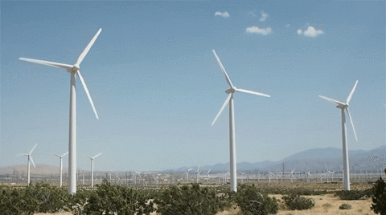

Callout
Wind Technology
Wind technology is one method of electricity generation that more communities are considering as a supplement to the electricity produced by hydroelectric, thermal, and nuclear power plants. Advances in wind turbine technology have provided significant improvements in efficiency.

Drawbacks of wind technology:
Possible Solutions